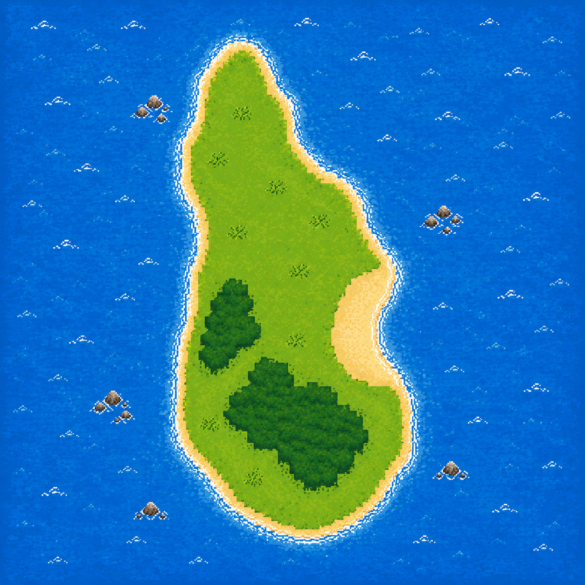
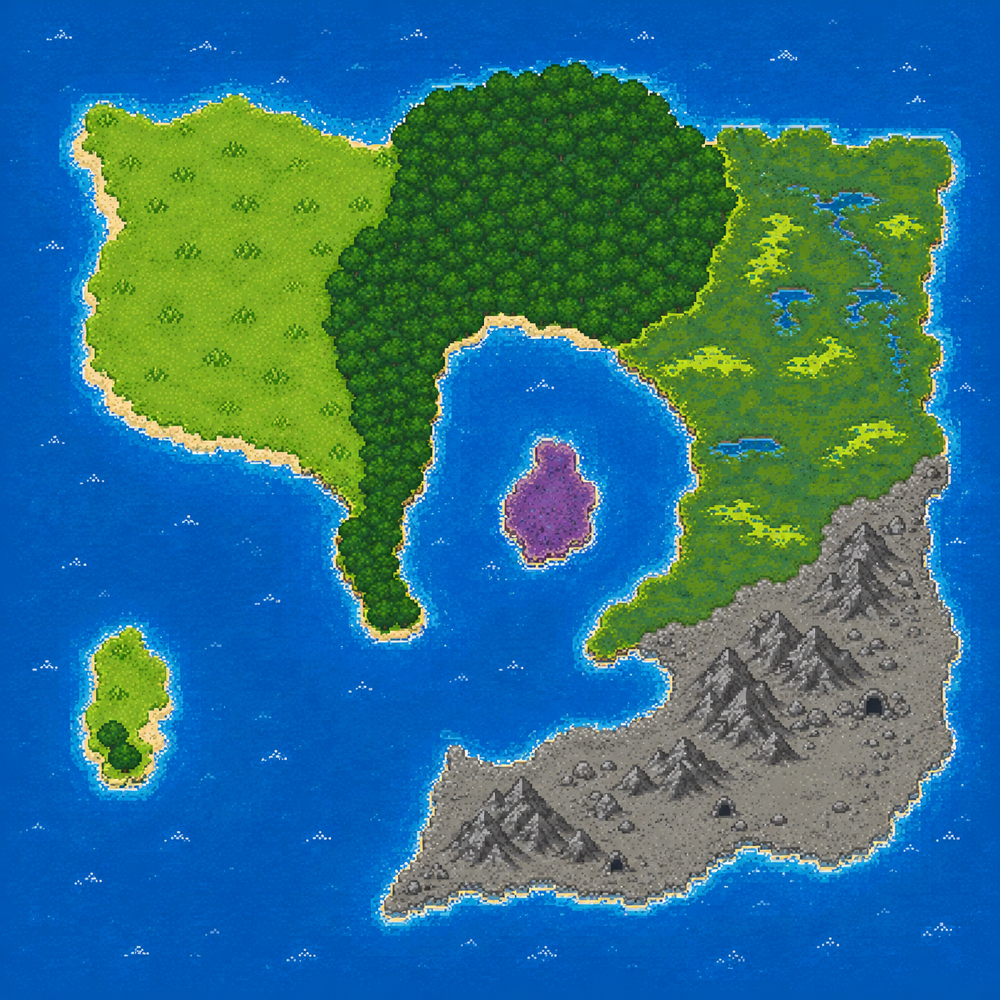
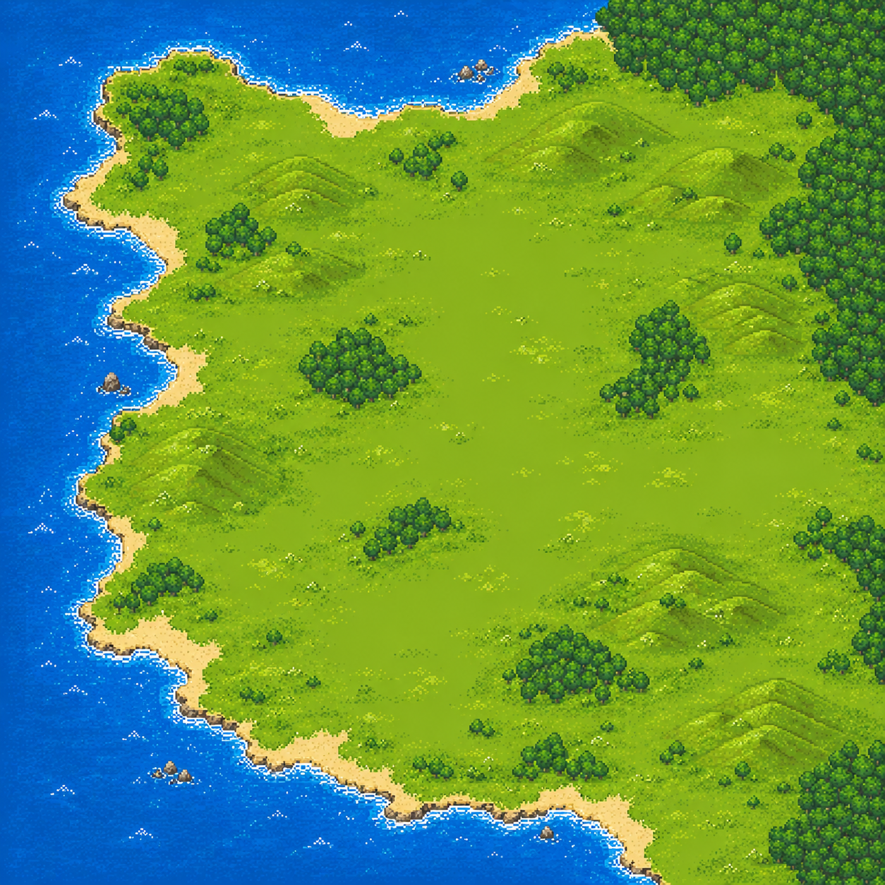
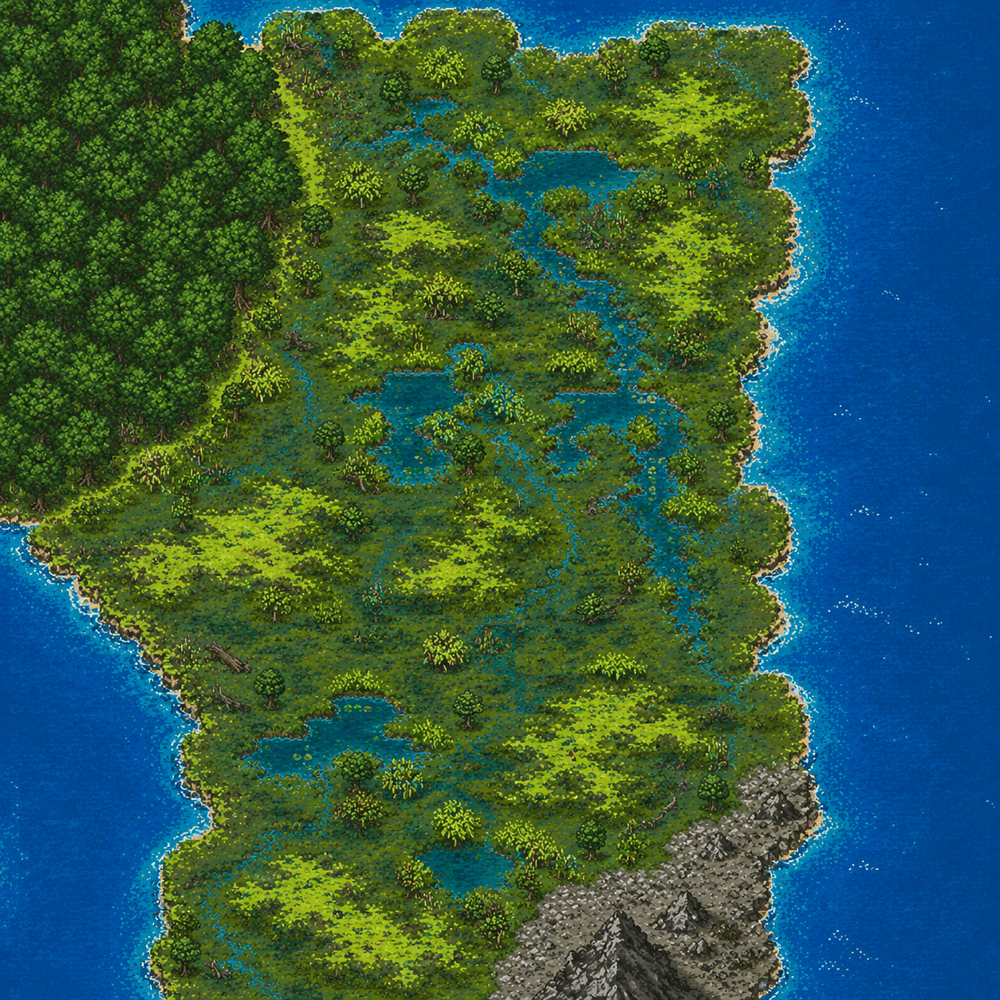

Interface
Panneau joueur, terminal, carte pixel art et zone visuelle. Rien n'est clickable : le clavier reste le coeur du jeu.
Fantasy RPG Python / Pygame
Un jeu d'exploration au clavier, avec interface visuelle, terminal central, cartes fixes, quetes de regions, loot progressif et un vieux serment que le royaume a presque oublie.
The Forest Fools garde son controle terminal : tu tapes les commandes, le reste de l'interface sert a afficher le joueur, la carte, le contexte et les scenes. Le style part vers une fantasy lumineuse, avec un mystere ancien plutot qu'une horreur pure.
Panneau joueur, terminal, carte pixel art et zone visuelle. Rien n'est clickable : le clavier reste le coeur du jeu.
Mosswake sert de tutoriel, puis le continent se divise en Crownvale, Greenmarch, Scalefen et Ashenreach.
Le wiki documente maintenant les textes, dialogues, quetes, items, armures, armes, sorts, monstres et maps.
Ile tutoriel, phare, village, port et Slime King.
Plaines royales, capitale, villages, Hollow Baron.
Foret ancienne, druides, racines et Thornwell Warden.
Marais des hommes-lezards, rites, Mirejaw Matriarch.
Montagnes, mines, pierre noire et Vaelrith.
Le continent sert de grande vision. Les regions jouables gardent des grilles 26x26, Mosswake reste en 10x10, et le jeu affiche les symboles seulement quand les lieux sont connus.




python pygame_app.py
Lance la version interface Pygame avec menu, intro, creation de personnage et terminal integre.
map, zoom crownvale, cd E5, look, talk, journal.
fight, cast fireball, use potion, equip sword, sleep.
Aide les habitants, termine les quetes de region, gagne les pass, debloque le loot plus puissant et avance vers Ashenreach.
Les portraits vont dans assets/images/npcs/. Le wiki donne les noms exacts a produire.
Format conseille : .ogg, surtout pour l'intro et l'ecran de creation.
Le build final passera par PyInstaller une fois gameplay, sauvegarde et assets stabilises.